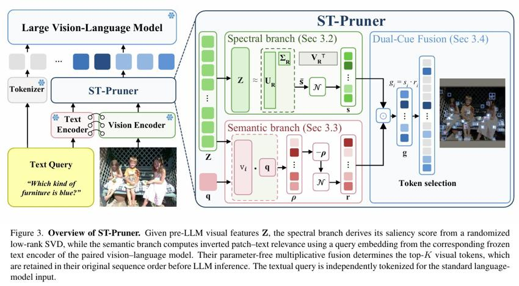
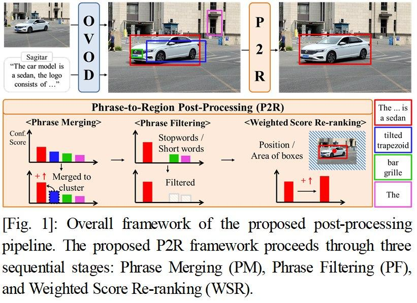

WACV 2027 Accepted
Don't Ask the LLM: Visual Token Pruning with Spectral Structure and Semantic Relevance
IEEE/CVF Winter Conference on Applications of Computer Vision
SEJONG UNIVERSITY · RCV LAB
Exploring how machines
see, understand, and reason.
I am an M.S. student in Intelligent Mechatronics Engineering at Sejong University, working with the Robotics and Computer Vision Lab.
My research interests include vision-language models, efficient visual token selection, and audio-visual question answering.
01 / RESEARCH

WACV 2027 Accepted
IEEE/CVF Winter Conference on Applications of Computer Vision
Under Review

KRoC 2026 Accepted
Korea Robotics Society Annual Conference · Feb. 2026
02 / BACKGROUND
Sejong University
Sejong University
Sejong University
03 / INTELLECTUAL PROPERTY
시각-언어 모델의 시각 토큰 선택 방법 및 장치
Korean Patent Application No. 10-2026-0201340 · Filed
동영상 특징 서술자 생성 방법 및 그 장치
Korean Patent No. 10-2860121 · Registered
04 / SOFTWARE REGISTRATION
05 / GET IN TOUCH